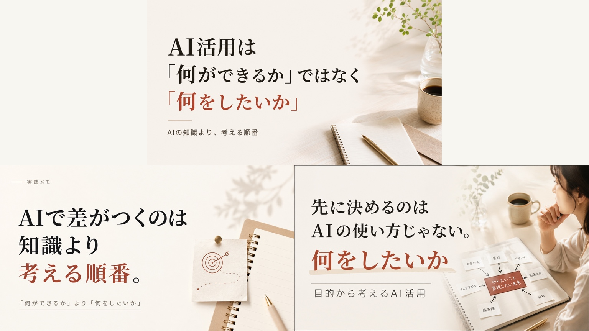

このサイトについて
このサイトで届けたいこと
AI活用の経験を、
読者が自分の作業で
試せる形にして届ける。
このサイトでは、私がAIを使って試したことや、その中で分かったことを紹介しています。実際に試した手順や、うまくいかなかったこと、修正したところも含めて、読者が自分の作業に取り入れられるように伝えていきます。
目指していること
使うツールが変わっても、AIで作りたいものを形にできる。
読んだ人が、自分の目的に合わせてAIを使い、作りたいものを形にできるようになることを目指しています。そのために、ツールが変わっても活かせる考え方と、実際に試せる具体的なやり方を伝えていきます。
つくっているもの
記事
- 何のために
- 投稿で概要をつかんだ人が、詳しいやり方や実例を確認し、自分の作業で試せるようにするために書いています。
- 自分で決めること／AIに任せること
- 誰に何を伝えるか、どんな内容を入れるかは、自分で考えます。その内容をもとにAIに構成案を作ってもらい、読んで気になったところや、変えたいところを整理しながら、一緒に直していきます。
サムネイル
- 何のために
- 流し見していても、記事を開く前に何の話か分かるようにするためです。AIで作った画像そのものが、活用の実例にもなります。
- 自分で決めること／AIに任せること
- コピーや、イラストで伝えたいことは自分で決めます。例えば、人がゴールを決め、AIが支えるという関係を、どう表すか。AIには3つの案を出してもらい、そこから選んだり、組み合わせたりして仕上げます。直したところは、次の回の最初の依頼に入れます。

AIに出してもらった3案。ここから選び、組み合わせて仕上げました。
動画
- 何のために
- 投稿の内容を、インフォグラフィックと音声で解説するために作っています。文章を読むより、見て聞くほうが楽な人にも、内容を届けたいと考えています。
- 自分で決めること／AIに任せること
- 投稿をもとに、AIで画像を作ります。構成も、伝えたい内容を大まかに決めてからAIに一度作ってもらい、気になったところを直していきます。ハイライトの出し方や、画像が切り替わるタイミングは、自分で見て、自然で分かりやすくなるように調整します。
つくり方
まず私が、伝えたいことや制作の方針を考えます。それをAIとのやり取りで広げたり、整理したりしながら、形にしていきます。
AIは、作業を任せる相手であると同時に、自分の考えを広げてくれる相棒のような存在です。
自分で決めること、AIに任せること
AIと一緒に
どう形にするかは、AIに案を出してもらいながら考えます。本で読んだことや調べたことから、見せ方を私が持ち込むこともあります。言い回しや構成、情報の順番を一度組み立ててもらい、意図に合っているかを見て直します。
制作の流れ
工程
自分がすること
AIに任せること
1読者と、伝えたいことを決める
自分誰に何を伝えるか、どんな内容を入れるかを考える
AI聞き手になり、足りない情報は埋めずに質問する
2最初の案を作る
自分入れたい内容と、使いたい見せ方があれば、それも渡す
AI言い回しや順番を整理して、案を作る
3案を見て、直す
自分気になる点や変えたい点を整理する。前回の振り返りも活かす
AI整理した内容に沿って、文章や構成を直す
4判断の基準に照らして見直す
自分「こういうときは、こうする」という基準が、今回も当てはまるか判断する
AI基準に照らして、気になる点を挙げる
5読まれ方を見て、次に活かす
自分数字やアンケートの回答をもとに、何を変えるか考える
AI集計や改善案づくりを手伝う
大事にしていること
- ツールが変わっても活かせる考え方を伝えるどのツールを紹介するときも、何のために、どう使うのかを大切にしています。
- 実際にやったことをもとに書く私がどう考え、どう試したかを、具体的な経験とともに紹介します。
- うまくいかなかったことも共有するうまくできた結果だけでなく、試す途中でつまずいたことや、修正したところも書いていきます。
- 使い方を押しつけない読者それぞれの目的や状況を大切にし、自分の作業に取り入れるためのヒントを届けたいと思っています。
データの扱いについて
このサイトでは、記事がどこまで読まれたか、どこで読むのをやめたか、アンケートの回答を、次の記事を改善するために集計しています。個人を特定できる情報は収集していません。
記録している内容は、このサイトの計測についてにまとめています。